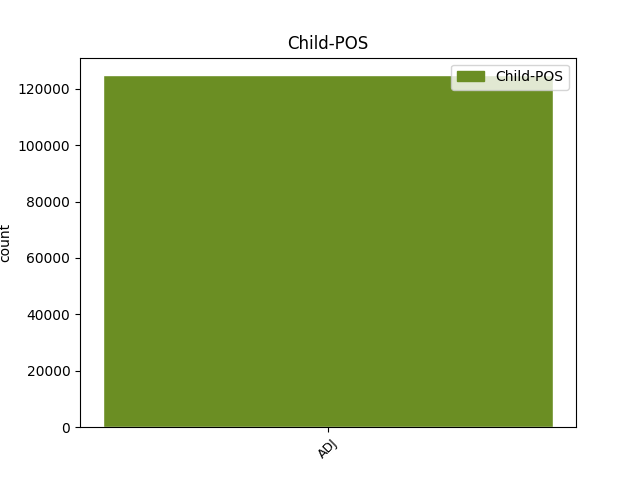

Distribution of features within this leaf

Agreement Rules sorted by frequency.
- When the dependent token is the modifer(mod) of the head token, and the head token is NOUN and the dependent token is ADJ.
1 na _ _ _ _ 0 _ _ _
2 kosmické _ _ _ _ 0 _ _ _
3 střelnici _ _ _ _ 0 _ _ _
4 zvané _ _ _ _ 0 _ _ _
5 sluneční sluneční ADJ AAFS1----1A---- Case=Nom|Degree=Pos|Gender=Fem|Number=Sing|Polarity=Pos 6 mod _ _
6 soustava soustava NOUN NNFS1-----A---- Case=Nom|Gender=Fem|Number=Sing|Polarity=Pos 0 _ _ _
7 to _ _ _ _ 0 _ _ _
8 bude _ _ _ _ 0 _ _ _
9 téměř _ _ _ _ 0 _ _ _
10 jistě _ _ _ _ 0 _ _ _
11 člověk _ _ _ _ 0 _ _ _
12 , _ _ _ _ 0 _ _ _
13 kdo _ _ _ _ 0 _ _ _
14 vytasí _ _ _ _ 0 _ _ _
15 jako _ _ _ _ 0 _ _ _
16 prvý _ _ _ _ 0 _ _ _
17 . _ _ _ _ 0 _ _ _
1 Planetky _ _ _ _ 0 _ _ _
2 mají _ _ _ _ 0 _ _ _
3 obecně _ _ _ _ 0 _ _ _
4 velmi _ _ _ _ 0 _ _ _
5 tmavý _ _ _ _ 0 _ _ _
6 povrch _ _ _ _ 0 _ _ _
7 , _ _ _ _ 0 _ _ _
8 rozptylující rozptylující ADJ AGIS4-----A---- Animacy=Inan|Aspect=Imp|Case=Acc|Gender=Masc|Number=Sing|Polarity=Pos|Tense=Pres|VerbForm=Part|Voice=Act 0 _ _ _
9 a _ _ _ _ 0 _ _ _
10 odrážející odrážející ADJ AGIS4-----A---- Animacy=Inan|Aspect=Imp|Case=Acc|Gender=Masc|Number=Sing|Polarity=Pos|Tense=Pres|VerbForm=Part|Voice=Act 8 conj _ LDeriv=odrážet
11 jen _ _ _ _ 0 _ _ _
12 několik _ _ _ _ 0 _ _ _
13 procent _ _ _ _ 0 _ _ _
14 dopadajícího _ _ _ _ 0 _ _ _
15 slunečního _ _ _ _ 0 _ _ _
16 záření _ _ _ _ 0 _ _ _
17 , _ _ _ _ 0 _ _ _
18 takže _ _ _ _ 0 _ _ _
19 vůbec _ _ _ _ 0 _ _ _
20 nejsou _ _ _ _ 0 _ _ _
21 " _ _ _ _ 0 _ _ _
22 fotogenické _ _ _ _ 0 _ _ _
23 " _ _ _ _ 0 _ _ _
24 . _ _ _ _ 0 _ _ _
1 Mezi _ _ _ _ 0 _ _ _
2 nejúspěšnější _ _ _ _ 0 _ _ _
3 zařízení _ _ _ _ 0 _ _ _
4 tohoto _ _ _ _ 0 _ _ _
5 druhu _ _ _ _ 0 _ _ _
6 patří _ _ _ _ 0 _ _ _
7 Maksutova _ _ _ _ 0 _ _ _
8 komora _ _ _ _ 0 _ _ _
9 na _ _ _ _ 0 _ _ _
10 Kleti _ _ _ _ 0 _ _ _
11 v _ _ _ _ 0 _ _ _
12 jižních jižní ADJ AAFP6----1A---- Case=Loc|Degree=Pos|Gender=Fem|Number=Plur|Polarity=Pos 13 mod _ _
13 Čechách Čechy PROPN NNFP6-----A---- Case=Loc|Gender=Fem|NameType=Geo|Number=Plur|Polarity=Pos 0 _ _ _
14 , _ _ _ _ 0 _ _ _
15 kde _ _ _ _ 0 _ _ _
16 bylo _ _ _ _ 0 _ _ _
17 v _ _ _ _ 0 _ _ _
18 uplynulých _ _ _ _ 0 _ _ _
19 desetiletích _ _ _ _ 0 _ _ _
20 zejména _ _ _ _ 0 _ _ _
21 zásluhou _ _ _ _ 0 _ _ _
22 A _ _ _ _ 0 _ _ _
23 . _ _ _ _ 0 _ _ _
24 Mrkose _ _ _ _ 0 _ _ _
25 objeveno _ _ _ _ 0 _ _ _
26 několik _ _ _ _ 0 _ _ _
27 set _ _ _ _ 0 _ _ _
28 planetek _ _ _ _ 0 _ _ _
29 a _ _ _ _ 0 _ _ _
30 také _ _ _ _ 0 _ _ _
31 několik _ _ _ _ 0 _ _ _
32 komet _ _ _ _ 0 _ _ _
33 . _ _ _ _ 0 _ _ _
1 Na _ _ _ _ 0 _ _ _
2 XXI _ _ _ _ 0 _ _ _
3 . _ _ _ _ 0 _ _ _
4 valném _ _ _ _ 0 _ _ _
5 shromáždění _ _ _ _ 0 _ _ _
6 Mezinárodní _ _ _ _ 0 _ _ _
7 astronomické _ _ _ _ 0 _ _ _
8 unie _ _ _ _ 0 _ _ _
9 v _ _ _ _ 0 _ _ _
10 srpnu _ _ _ _ 0 _ _ _
11 1991 _ _ _ _ 0 _ _ _
12 v _ _ _ _ 0 _ _ _
13 Buenos _ _ _ _ 0 _ _ _
14 Aires _ _ _ _ 0 _ _ _
15 byla _ _ _ _ 0 _ _ _
16 ustavena _ _ _ _ 0 _ _ _
17 mezioborová _ _ _ _ 0 _ _ _
18 pracovní _ _ _ _ 0 _ _ _
19 skupina _ _ _ _ 0 _ _ _
20 pro _ _ _ _ 0 _ _ _
21 " _ _ _ _ 0 _ _ _
22 objekty _ _ _ _ 0 _ _ _
23 poblíž _ _ _ _ 0 _ _ _
24 Země _ _ _ _ 0 _ _ _
25 " _ _ _ _ 0 _ _ _
26 ( _ _ _ _ 0 _ _ _
27 WGNEO _ _ _ _ 0 _ _ _
28 ) _ _ _ _ 0 _ _ _
29 , _ _ _ _ 0 _ _ _
30 která _ _ _ _ 0 _ _ _
31 má _ _ _ _ 0 _ _ _
32 dva _ _ _ _ 0 _ _ _
33 hlavní _ _ _ _ 0 _ _ _
34 úkoly _ _ _ _ 0 _ _ _
35 , _ _ _ _ 0 _ _ _
36 totiž _ _ _ _ 0 _ _ _
37 především _ _ _ _ 0 _ _ _
38 vypracovat _ _ _ _ 0 _ _ _
39 metody _ _ _ _ 0 _ _ _
40 co _ _ _ _ 0 _ _ _
41 možná _ _ _ _ 0 _ _ _
42 úplné _ _ _ _ 0 _ _ _
43 inventarizace _ _ _ _ 0 _ _ _
44 rizikových _ _ _ _ 0 _ _ _
45 těles _ _ _ _ 0 _ _ _
46 a _ _ _ _ 0 _ _ _
47 za za ADP RR--4---------- AdpType=Prep|Case=Acc 0 _ _ _
48 druhé druhý ADJ CrNS4---------- Case=Acc|Gender=Neut|Number=Sing|NumType=Ord 47 comp:obj _ _
49 navrhnout _ _ _ _ 0 _ _ _
50 vhodné _ _ _ _ 0 _ _ _
51 způsoby _ _ _ _ 0 _ _ _
52 ochrany _ _ _ _ 0 _ _ _
53 před _ _ _ _ 0 _ _ _
54 katastrofickými _ _ _ _ 0 _ _ _
55 srážkami _ _ _ _ 0 _ _ _
56 . _ _ _ _ 0 _ _ _
1 Když _ _ _ _ 0 _ _ _
2 si _ _ _ _ 0 _ _ _
3 pak _ _ _ _ 0 _ _ _
4 nechají _ _ _ _ 0 _ _ _
5 svou _ _ _ _ 0 _ _ _
6 " _ _ _ _ 0 _ _ _
7 schovanou _ _ _ _ 0 _ _ _
8 " _ _ _ _ 0 _ _ _
9 krev _ _ _ _ 0 _ _ _
10 před _ _ _ _ 0 _ _ _
11 závodem _ _ _ _ 0 _ _ _
12 vstřiknout _ _ _ _ 0 _ _ _
13 do _ _ _ _ 0 _ _ _
14 žíly _ _ _ _ 0 _ _ _
15 ( _ _ _ _ 0 _ _ _
16 transfúze _ _ _ _ 0 _ _ _
17 ) _ _ _ _ 0 _ _ _
18 , _ _ _ _ 0 _ _ _
19 mají _ _ _ _ 0 _ _ _
20 proti _ _ _ _ 0 _ _ _
21 ostatním _ _ _ _ 0 _ _ _
22 výhodu _ _ _ _ 0 _ _ _
23 : _ _ _ _ 0 _ _ _
24 jejich _ _ _ _ 0 _ _ _
25 krev _ _ _ _ 0 _ _ _
26 je _ _ _ _ 0 _ _ _
27 schopna _ _ _ _ 0 _ _ _
28 přenášet _ _ _ _ 0 _ _ _
29 více _ _ _ _ 0 _ _ _
30 kyslíku _ _ _ _ 0 _ _ _
31 a _ _ _ _ 0 _ _ _
32 umožnit _ _ _ _ 0 _ _ _
33 jim _ _ _ _ 0 _ _ _
34 vyšší _ _ _ _ 0 _ _ _
35 výkon _ _ _ _ 0 _ _ _
36 , _ _ _ _ 0 _ _ _
37 než _ _ _ _ 0 _ _ _
38 jakého _ _ _ _ 0 _ _ _
39 mohou _ _ _ _ 0 _ _ _
40 dosáhnout _ _ _ _ 0 _ _ _
41 ti ten DET PDMP1---------- Animacy=Anim|Case=Nom|Gender=Masc|Number=Plur|PronType=Dem 0 _ _ _
42 poctiví poctivý ADJ AAMP1----1A---- Animacy=Anim|Case=Nom|Degree=Pos|Gender=Masc|Number=Plur|Polarity=Pos 41 mod _ SpaceAfter=No
43 , _ _ _ _ 0 _ _ _
44 co _ _ _ _ 0 _ _ _
45 krevního _ _ _ _ 0 _ _ _
46 dopingu _ _ _ _ 0 _ _ _
47 nepoužili _ _ _ _ 0 _ _ _
48 . _ _ _ _ 0 _ _ _
1 V _ _ _ _ 0 _ _ _
2 sochách _ _ _ _ 0 _ _ _
3 Nepomukových _ _ _ _ 0 _ _ _
4 se _ _ _ _ 0 _ _ _
5 vrací _ _ _ _ 0 _ _ _
6 duchovní _ _ _ _ 0 _ _ _
7 postava postava NOUN NNFS1-----A---- Case=Nom|Gender=Fem|Number=Sing|Polarity=Pos 0 _ _ _
8 Husova _ _ _ _ 0 _ _ _
9 pročistěná pročistěný ADJ AAFS1----1A---- Case=Nom|Degree=Pos|Gender=Fem|Number=Sing|Polarity=Pos 7 comp:pred _ LDeriv=pročistit
10 utrpením _ _ _ _ 0 _ _ _
11 minulých _ _ _ _ 0 _ _ _
12 staletí _ _ _ _ 0 _ _ _
13 . _ _ _ _ 0 _ _ _
1 O _ _ _ _ 0 _ _ _
2 mučedníky _ _ _ _ 0 _ _ _
3 víry _ _ _ _ 0 _ _ _
4 nebyla _ _ _ _ 0 _ _ _
5 ve _ _ _ _ 0 _ _ _
6 středověkém _ _ _ _ 0 _ _ _
7 prostoru _ _ _ _ 0 _ _ _
8 nikdy _ _ _ _ 0 _ _ _
9 nouze _ _ _ _ 0 _ _ _
10 a _ _ _ _ 0 _ _ _
11 ve _ _ _ _ 0 _ _ _
12 světle _ _ _ _ 0 _ _ _
13 celého _ _ _ _ 0 _ _ _
14 umučeného _ _ _ _ 0 _ _ _
15 pražského _ _ _ _ 0 _ _ _
16 židovského _ _ _ _ 0 _ _ _
17 města _ _ _ _ 0 _ _ _
18 se _ _ _ _ 0 _ _ _
19 smrt _ _ _ _ 0 _ _ _
20 jednoho jeden NUM ClZS2---------- Case=Gen|Gender=Masc,Neut|Number=Sing|NumForm=Word|NumType=Card|NumValue=1,2,3 0 _ _ _
21 spravedlivého spravedlivý ADJ AAMS2----1A---- Animacy=Anim|Case=Gen|Degree=Pos|Gender=Masc|Number=Sing|Polarity=Pos 20 mod _ _
22 na _ _ _ _ 0 _ _ _
23 pražském _ _ _ _ 0 _ _ _
24 mostě _ _ _ _ 0 _ _ _
25 jeví _ _ _ _ 0 _ _ _
26 jako _ _ _ _ 0 _ _ _
27 tendenční _ _ _ _ 0 _ _ _
28 , _ _ _ _ 0 _ _ _
29 jednostranně _ _ _ _ 0 _ _ _
30 zvýrazněná _ _ _ _ 0 _ _ _
31 historka _ _ _ _ 0 _ _ _
32 . _ _ _ _ 0 _ _ _
1 A _ _ _ _ 0 _ _ _
2 přece _ _ _ _ 0 _ _ _
3 jeho _ _ _ _ 0 _ _ _
4 latinský _ _ _ _ 0 _ _ _
5 i _ _ _ _ 0 _ _ _
6 anglický _ _ _ _ 0 _ _ _
7 ( _ _ _ _ 0 _ _ _
8 a _ _ _ _ 0 _ _ _
9 nakonec _ _ _ _ 0 _ _ _
10 i _ _ _ _ 0 _ _ _
11 český _ _ _ _ 0 _ _ _
12 - _ _ _ _ 0 _ _ _
13 nyní _ _ _ _ 0 _ _ _
14 se _ _ _ _ 0 _ _ _
15 doporučuje _ _ _ _ 0 _ _ _
16 říkat _ _ _ _ 0 _ _ _
17 oxidy _ _ _ _ 0 _ _ _
18 , _ _ _ _ 0 _ _ _
19 nikoli _ _ _ _ 0 _ _ _
20 kysličníky _ _ _ _ 0 _ _ _
21 ) _ _ _ _ 0 _ _ _
22 název _ _ _ _ 0 _ _ _
23 pochází _ _ _ _ 0 _ _ _
24 z _ _ _ _ 0 _ _ _
25 řeckého _ _ _ _ 0 _ _ _
26 adjektiva _ _ _ _ 0 _ _ _
27 oxys oxys ADJ AAIS1----1A---- Animacy=Inan|Case=Nom|Degree=Pos|Foreign=Yes|Gender=Masc|Number=Sing|Polarity=Pos 0 _ _ _
28 , _ _ _ _ 0 _ _ _
29 tj _ _ _ _ 0 _ _ _
30 . _ _ _ _ 0 _ _ _
31 ostrý ostrý ADJ AAIS1----1A---- Animacy=Inan|Case=Nom|Degree=Pos|Gender=Masc|Number=Sing|Polarity=Pos 27 appos _ SpaceAfter=No
32 , _ _ _ _ 0 _ _ _
33 kyselý _ _ _ _ 0 _ _ _
34 , _ _ _ _ 0 _ _ _
35 takže _ _ _ _ 0 _ _ _
36 složku _ _ _ _ 0 _ _ _
37 oxy _ _ _ _ 0 _ _ _
38 - _ _ _ _ 0 _ _ _
39 najdeme _ _ _ _ 0 _ _ _
40 i _ _ _ _ 0 _ _ _
41 v _ _ _ _ 0 _ _ _
42 názvu _ _ _ _ 0 _ _ _
43 semen _ _ _ _ 0 _ _ _
44 rostlin _ _ _ _ 0 _ _ _
45 ( _ _ _ _ 0 _ _ _
46 oxykarpní _ _ _ _ 0 _ _ _
47 = _ _ _ _ 0 _ _ _
48 semena _ _ _ _ 0 _ _ _
49 s _ _ _ _ 0 _ _ _
50 ostrou _ _ _ _ 0 _ _ _
51 špičkou _ _ _ _ 0 _ _ _
52 ) _ _ _ _ 0 _ _ _
53 i _ _ _ _ 0 _ _ _
54 v _ _ _ _ 0 _ _ _
55 řečových _ _ _ _ 0 _ _ _
56 figurách _ _ _ _ 0 _ _ _
57 ( _ _ _ _ 0 _ _ _
58 oxymoron _ _ _ _ 0 _ _ _
59 je _ _ _ _ 0 _ _ _
60 spojení _ _ _ _ 0 _ _ _
61 slov _ _ _ _ 0 _ _ _
62 , _ _ _ _ 0 _ _ _
63 která _ _ _ _ 0 _ _ _
64 jsou _ _ _ _ 0 _ _ _
65 v _ _ _ _ 0 _ _ _
66 příkrém _ _ _ _ 0 _ _ _
67 významovém _ _ _ _ 0 _ _ _
68 rozporu _ _ _ _ 0 _ _ _
69 , _ _ _ _ 0 _ _ _
70 např _ _ _ _ 0 _ _ _
71 . _ _ _ _ 0 _ _ _
72 živá _ _ _ _ 0 _ _ _
73 mrtvola _ _ _ _ 0 _ _ _
74 ; _ _ _ _ 0 _ _ _
1 Výpočty _ _ _ _ 0 _ _ _
2 totiž _ _ _ _ 0 _ _ _
3 naznačují _ _ _ _ 0 _ _ _
4 , _ _ _ _ 0 _ _ _
5 že _ _ _ _ 0 _ _ _
6 při _ _ _ _ 0 _ _ _
7 srážce _ _ _ _ 0 _ _ _
8 Země _ _ _ _ 0 _ _ _
9 s _ _ _ _ 0 _ _ _
10 10 _ _ _ _ 0 _ _ _
11 km _ _ _ _ 0 _ _ _
12 planetkou _ _ _ _ 0 _ _ _
13 by _ _ _ _ 0 _ _ _
14 bezprostředně _ _ _ _ 0 _ _ _
15 po _ _ _ _ 0 _ _ _
16 dopadu _ _ _ _ 0 _ _ _
17 zahynula _ _ _ _ 0 _ _ _
18 čtvrtina _ _ _ _ 0 _ _ _
19 lidské _ _ _ _ 0 _ _ _
20 populace _ _ _ _ 0 _ _ _
21 a _ _ _ _ 0 _ _ _
22 zbylí zbylý ADJ AAMP1----1A---- Animacy=Anim|Case=Nom|Degree=Pos|Gender=Masc|Number=Plur|Polarity=Pos 24 mod _ _
23 " _ _ _ _ 0 _ _ _
24 živí živý ADJ AAMP1----1A---- Animacy=Anim|Case=Nom|Degree=Pos|Gender=Masc|Number=Plur|Polarity=Pos 0 _ _ _
25 by _ _ _ _ 0 _ _ _
26 záviděli _ _ _ _ 0 _ _ _
27 mrtvým _ _ _ _ 0 _ _ _
28 " _ _ _ _ 0 _ _ _
29 . _ _ _ _ 0 _ _ _
1 Teorie _ _ _ _ 0 _ _ _
2 se _ _ _ _ 0 _ _ _
3 tak _ _ _ _ 0 _ _ _
4 stávají _ _ _ _ 0 _ _ _
5 provizorii provizórium NOUN NNNP7-----A---- Case=Ins|Gender=Neut|Number=Plur|Polarity=Pos|Style=Rare 0 _ _ _
6 , _ _ _ _ 0 _ _ _
7 dočasnými dočasný ADJ AAMP7----1A---- Animacy=Anim|Case=Ins|Degree=Pos|Gender=Masc|Number=Plur|Polarity=Pos 5 conj _ _
8 průvodci _ _ _ _ 0 _ _ _
9 lidí _ _ _ _ 0 _ _ _
10 přes _ _ _ _ 0 _ _ _
11 pohyblivý _ _ _ _ 0 _ _ _
12 písek _ _ _ _ 0 _ _ _
13 jejich _ _ _ _ 0 _ _ _
14 existence _ _ _ _ 0 _ _ _
15 . _ _ _ _ 0 _ _ _
1 V _ _ _ _ 0 _ _ _
2 padesátých _ _ _ _ 0 _ _ _
3 letech _ _ _ _ 0 _ _ _
4 , _ _ _ _ 0 _ _ _
5 tři _ _ _ _ 0 _ _ _
6 roky _ _ _ _ 0 _ _ _
7 po _ _ _ _ 0 _ _ _
8 zveřejnění _ _ _ _ 0 _ _ _
9 Watsonovy _ _ _ _ 0 _ _ _
10 a _ _ _ _ 0 _ _ _
11 Crickovy _ _ _ _ 0 _ _ _
12 základní _ _ _ _ 0 _ _ _
13 práce _ _ _ _ 0 _ _ _
14 o _ _ _ _ 0 _ _ _
15 struktuře _ _ _ _ 0 _ _ _
16 kyseliny _ _ _ _ 0 _ _ _
17 deoxyribonukleové _ _ _ _ 0 _ _ _
18 , _ _ _ _ 0 _ _ _
19 se _ _ _ _ 0 _ _ _
20 zabývali _ _ _ _ 0 _ _ _
21 Krebs _ _ _ _ 0 _ _ _
22 a _ _ _ _ 0 _ _ _
23 Fischer _ _ _ _ 0 _ _ _
24 regulací _ _ _ _ 0 _ _ _
25 metabolismu _ _ _ _ 0 _ _ _
26 , _ _ _ _ 0 _ _ _
27 tedy _ _ _ _ 0 _ _ _
28 něčím _ _ _ _ 0 _ _ _
29 , _ _ _ _ 0 _ _ _
30 za _ _ _ _ 0 _ _ _
31 co _ _ _ _ 0 _ _ _
32 Nobelovy _ _ _ _ 0 _ _ _
33 ceny _ _ _ _ 0 _ _ _
34 byly _ _ _ _ 0 _ _ _
35 již _ _ _ _ 0 _ _ _
36 dávno _ _ _ _ 0 _ _ _
37 uděleny _ _ _ _ 0 _ _ _
38 v _ _ _ _ 0 _ _ _
39 letech _ _ _ _ 0 _ _ _
40 čtyřicátých _ _ _ _ 0 _ _ _
41 - _ _ _ _ 0 _ _ _
42 Warburgovi Warburg PROPN NNMS3-----A---- Animacy=Anim|Case=Dat|Gender=Masc|NameType=Sur|Number=Sing|Polarity=Pos 0 _ _ _
43 a _ _ _ _ 0 _ _ _
44 jiným jiný ADJ AAMP3----1A---- Animacy=Anim|Case=Dat|Degree=Pos|Gender=Masc|Number=Plur|Polarity=Pos 42 conj _ SpaceAfter=No
45 . _ _ _ _ 0 _ _ _
1 Ke _ _ _ _ 0 _ _ _
2 slovu _ _ _ _ 0 _ _ _
3 mají _ _ _ _ 0 _ _ _
4 přicházet _ _ _ _ 0 _ _ _
5 všechny všechen DET PLFP1---------- Case=Nom|Gender=Fem|Number=Plur|PronType=Tot 0 _ _ _
6 , _ _ _ _ 0 _ _ _
7 a _ _ _ _ 0 _ _ _
8 to _ _ _ _ 0 _ _ _
9 i _ _ _ _ 0 _ _ _
10 temné temný ADJ AAFP1----1A---- Case=Nom|Degree=Pos|Gender=Fem|Number=Plur|Polarity=Pos 5 conj _ _
11 instinktivní _ _ _ _ 0 _ _ _
12 složky _ _ _ _ 0 _ _ _
13 psychického _ _ _ _ 0 _ _ _
14 života _ _ _ _ 0 _ _ _
15 člověka _ _ _ _ 0 _ _ _
16 . _ _ _ _ 0 _ _ _
17 . _ _ _ _ 0 _ _ _
18 . _ _ _ _ 0 _ _ _
19 . _ _ _ _ 0 _ _ _
1 John _ _ _ _ 0 _ _ _
2 viděl _ _ _ _ 0 _ _ _
3 všechno všechen DET PLNS4---------- Case=Acc|Gender=Neut|Number=Sing|PronType=Tot 0 _ _ _
4 na _ _ _ _ 0 _ _ _
5 Zemi _ _ _ _ 0 _ _ _
6 takto _ _ _ _ 0 _ _ _
7 spojené spojený ADJ AANS4----1A---- Case=Acc|Degree=Pos|Gender=Neut|Number=Sing|Polarity=Pos 3 comp:pred _ LDeriv=spojit
8 s _ _ _ _ 0 _ _ _
9 vesmírem _ _ _ _ 0 _ _ _
10 , _ _ _ _ 0 _ _ _
11 a _ _ _ _ 0 _ _ _
12 proto _ _ _ _ 0 _ _ _
13 se _ _ _ _ 0 _ _ _
14 mu _ _ _ _ 0 _ _ _
15 i _ _ _ _ 0 _ _ _
16 drobnosti _ _ _ _ 0 _ _ _
17 jevily _ _ _ _ 0 _ _ _
18 velce _ _ _ _ 0 _ _ _
19 . _ _ _ _ 0 _ _ _
1 Kyslík _ _ _ _ 0 _ _ _
2 byl _ _ _ _ 0 _ _ _
3 kdysi _ _ _ _ 0 _ _ _
4 považován _ _ _ _ 0 _ _ _
5 za _ _ _ _ 0 _ _ _
6 hlavní _ _ _ _ 0 _ _ _
7 složku _ _ _ _ 0 _ _ _
8 při _ _ _ _ 0 _ _ _
9 vzniku _ _ _ _ 0 _ _ _
10 kyselin _ _ _ _ 0 _ _ _
11 , _ _ _ _ 0 _ _ _
12 proto _ _ _ _ 0 _ _ _
13 oxy _ _ _ _ 0 _ _ _
14 - _ _ _ _ 0 _ _ _
15 ( _ _ _ _ 0 _ _ _
16 kyselost _ _ _ _ 0 _ _ _
17 ) _ _ _ _ 0 _ _ _
18 - _ _ _ _ 0 _ _ _
19 gen gen NOUN NNIS1-----A---- Animacy=Inan|Case=Nom|Gender=Masc|Number=Sing|Polarity=Pos 0 _ _ _
20 ( _ _ _ _ 0 _ _ _
21 budící budící ADJ AGIS1-----A---- Animacy=Inan|Aspect=Imp|Case=Nom|Gender=Masc|Number=Sing|Polarity=Pos|Tense=Pres|VerbForm=Part|Voice=Act 19 appos _ LDeriv=budit|SpaceAfter=No
22 ) _ _ _ _ 0 _ _ _
23 . _ _ _ _ 0 _ _ _
1 U _ _ _ _ 0 _ _ _
2 druhu _ _ _ _ 0 _ _ _
3 Paruroctonus Paruroctonus NOUN NNMS1-----A---- Animacy=Anim|Case=Nom|Foreign=Yes|Gender=Masc|Number=Sing|Polarity=Pos 0 _ _ _
4 mesaensis mesaensis ADJ AAMS1----1A---- Animacy=Anim|Case=Nom|Degree=Pos|Foreign=Yes|Gender=Masc|Number=Sing|Polarity=Pos 3 flat@foreign _ _
5 z _ _ _ _ 0 _ _ _
6 čeledi _ _ _ _ 0 _ _ _
7 Vejovidae _ _ _ _ 0 _ _ _
8 prokázal _ _ _ _ 0 _ _ _
9 Brownell _ _ _ _ 0 _ _ _
10 , _ _ _ _ 0 _ _ _
11 že _ _ _ _ 0 _ _ _
12 tarzální _ _ _ _ 0 _ _ _
13 orgán _ _ _ _ 0 _ _ _
14 deteguje _ _ _ _ 0 _ _ _
15 dva _ _ _ _ 0 _ _ _
16 typy _ _ _ _ 0 _ _ _
17 chvění _ _ _ _ 0 _ _ _
18 podkladu _ _ _ _ 0 _ _ _
19 : _ _ _ _ 0 _ _ _
20 nízkofrekvenční _ _ _ _ 0 _ _ _
21 , _ _ _ _ 0 _ _ _
22 povrchové _ _ _ _ 0 _ _ _
23 a _ _ _ _ 0 _ _ _
24 vysokofrekvenční _ _ _ _ 0 _ _ _
25 vlnění _ _ _ _ 0 _ _ _
26 . _ _ _ _ 0 _ _ _
1 Očnice _ _ _ _ 0 _ _ _
2 jsou _ _ _ _ 0 _ _ _
3 hranatě _ _ _ _ 0 _ _ _
4 okrouhlé _ _ _ _ 0 _ _ _
5 , _ _ _ _ 0 _ _ _
6 středně _ _ _ _ 0 _ _ _
7 vysoké _ _ _ _ 0 _ _ _
8 , _ _ _ _ 0 _ _ _
9 nos nos NOUN NNIS1-----A---- Animacy=Inan|Case=Nom|Gender=Masc|Number=Sing|Polarity=Pos 0 _ _ _
10 vysoký vysoký ADJ AAIS1----1A---- Animacy=Inan|Case=Nom|Degree=Pos|Gender=Masc|Number=Sing|Polarity=Pos 9 orphan _ _
11 a _ _ _ _ 0 _ _ _
12 úzký _ _ _ _ 0 _ _ _
13 a _ _ _ _ 0 _ _ _
14 jařmové _ _ _ _ 0 _ _ _
15 partie _ _ _ _ 0 _ _ _
16 jsou _ _ _ _ 0 _ _ _
17 jen _ _ _ _ 0 _ _ _
18 slabě _ _ _ _ 0 _ _ _
19 vytvořeny _ _ _ _ 0 _ _ _
20 . _ _ _ _ 0 _ _ _
1 Krebs _ _ _ _ 0 _ _ _
2 začínal _ _ _ _ 0 _ _ _
3 svou _ _ _ _ 0 _ _ _
4 kariéru _ _ _ _ 0 _ _ _
5 v _ _ _ _ 0 _ _ _
6 laboratoři _ _ _ _ 0 _ _ _
7 takových _ _ _ _ 0 _ _ _
8 nositelů _ _ _ _ 0 _ _ _
9 Nobelovy _ _ _ _ 0 _ _ _
10 ceny _ _ _ _ 0 _ _ _
11 z _ _ _ _ 0 _ _ _
12 let _ _ _ _ 0 _ _ _
13 čtyřicátých _ _ _ _ 0 _ _ _
14 ( _ _ _ _ 0 _ _ _
15 1947 _ _ _ _ 0 _ _ _
16 ) _ _ _ _ 0 _ _ _
17 , _ _ _ _ 0 _ _ _
18 jako _ _ _ _ 0 _ _ _
19 byli _ _ _ _ 0 _ _ _
20 manželé manžel NOUN NNMP1-----A---- Animacy=Anim|Case=Nom|Gender=Masc|Number=Plur|Polarity=Pos 0 _ _ _
21 Coriovi Coriův ADJ AUMP1M--------- Animacy=Anim|Case=Nom|Gender=Masc|Gender[psor]=Masc|NameType=Sur|Number=Plur|Poss=Yes 20 flat _ LDeriv=Coria
22 ( _ _ _ _ 0 _ _ _
23 viz _ _ _ _ 0 _ _ _
24 Vesmír _ _ _ _ 0 _ _ _
25 69 _ _ _ _ 0 _ _ _
26 , _ _ _ _ 0 _ _ _
27 476 _ _ _ _ 0 _ _ _
28 , _ _ _ _ 0 _ _ _
29 1990 _ _ _ _ 0 _ _ _
30 ) _ _ _ _ 0 _ _ _
31 . _ _ _ _ 0 _ _ _
1 V _ _ _ _ 0 _ _ _
2 porovnání _ _ _ _ 0 _ _ _
3 se _ _ _ _ 0 _ _ _
4 stavem _ _ _ _ 0 _ _ _
5 v _ _ _ _ 0 _ _ _
6 l _ _ _ _ 0 _ _ _
7 . _ _ _ _ 0 _ _ _
8 1970 _ _ _ _ 0 _ _ _
9 a _ _ _ _ 0 _ _ _
10 1980 _ _ _ _ 0 _ _ _
11 si _ _ _ _ 0 _ _ _
12 žádný _ _ _ _ 0 _ _ _
13 okres _ _ _ _ 0 _ _ _
14 ČR _ _ _ _ 0 _ _ _
15 ani _ _ _ _ 0 _ _ _
16 SR _ _ _ _ 0 _ _ _
17 v _ _ _ _ 0 _ _ _
18 r _ _ _ _ 0 _ _ _
19 . _ _ _ _ 0 _ _ _
20 1989 _ _ _ _ 0 _ _ _
21 " _ _ _ _ 0 _ _ _
22 nevylepšil _ _ _ _ 0 _ _ _
23 " _ _ _ _ 0 _ _ _
24 pozici _ _ _ _ 0 _ _ _
25 , _ _ _ _ 0 _ _ _
26 naopak _ _ _ _ 0 _ _ _
27 jeden _ _ _ _ 0 _ _ _
28 český _ _ _ _ 0 _ _ _
29 a _ _ _ _ 0 _ _ _
30 jeden jeden NUM ClYS1---------- Case=Nom|Gender=Masc|Number=Sing|NumForm=Word|NumType=Card|NumValue=1,2,3 0 _ _ _
31 slovenský slovenský ADJ AAIS1----1A---- Animacy=Inan|Case=Nom|Degree=Pos|Gender=Masc|Number=Sing|Polarity=Pos 30 conj _ _
32 si _ _ _ _ 0 _ _ _
33 ji _ _ _ _ 0 _ _ _
34 výrazně _ _ _ _ 0 _ _ _
35 zhoršily _ _ _ _ 0 _ _ _
36 : _ _ _ _ 0 _ _ _
37 Jindřichův _ _ _ _ 0 _ _ _
38 Hradec _ _ _ _ 0 _ _ _
39 a _ _ _ _ 0 _ _ _
40 Spišská _ _ _ _ 0 _ _ _
41 Nová _ _ _ _ 0 _ _ _
42 Ves _ _ _ _ 0 _ _ _
43 . _ _ _ _ 0 _ _ _
1 Některé _ _ _ _ 0 _ _ _
2 skupiny _ _ _ _ 0 _ _ _
3 " _ _ _ _ 0 _ _ _
4 tvářových _ _ _ _ 0 _ _ _
5 " _ _ _ _ 0 _ _ _
6 neuronů _ _ _ _ 0 _ _ _
7 odpovídají _ _ _ _ 0 _ _ _
8 proměnami _ _ _ _ 0 _ _ _
9 činnosti _ _ _ _ 0 _ _ _
10 na _ _ _ _ 0 _ _ _
11 přímý _ _ _ _ 0 _ _ _
12 pohled _ _ _ _ 0 _ _ _
13 na _ _ _ _ 0 _ _ _
14 tvář _ _ _ _ 0 _ _ _
15 , _ _ _ _ 0 _ _ _
16 další další ADJ AAFP1----1A---- Case=Nom|Degree=Pos|Gender=Fem|Number=Plur|Polarity=Pos 0 _ _ _
17 na _ _ _ _ 0 _ _ _
18 její _ _ _ _ 0 _ _ _
19 profil _ _ _ _ 0 _ _ _
20 , _ _ _ _ 0 _ _ _
21 jiné jiný ADJ AAFP1----1A---- Case=Nom|Degree=Pos|Gender=Fem|Number=Plur|Polarity=Pos 16 orphan _ _
22 na _ _ _ _ 0 _ _ _
23 zátylek _ _ _ _ 0 _ _ _
24 nebo _ _ _ _ 0 _ _ _
25 na _ _ _ _ 0 _ _ _
26 zdvižení _ _ _ _ 0 _ _ _
27 či _ _ _ _ 0 _ _ _
28 obrácení _ _ _ _ 0 _ _ _
29 tváře _ _ _ _ 0 _ _ _
30 bradou _ _ _ _ 0 _ _ _
31 dolů _ _ _ _ 0 _ _ _
32 . _ _ _ _ 0 _ _ _
1 V _ _ _ _ 0 _ _ _
2 jednotlivcích _ _ _ _ 0 _ _ _
3 ve _ _ _ _ 0 _ _ _
4 střelbě _ _ _ _ 0 _ _ _
5 z _ _ _ _ 0 _ _ _
6 revolveru _ _ _ _ 0 _ _ _
7 skončil _ _ _ _ 0 _ _ _
8 Šafránek Šafránek PROPN NNMS1-----A---- Animacy=Anim|Case=Nom|Gender=Masc|NameType=Sur|Number=Sing|Polarity=Pos 0 _ _ _
9 osmý osmý ADJ AAMS1----1A---- Animacy=Anim|Case=Nom|Degree=Pos|Gender=Masc|Number=Sing|Polarity=Pos 8 comp:pred _ SpaceAfter=No
10 . _ _ _ _ 0 _ _ _
1 Současně _ _ _ _ 0 _ _ _
2 zpracovávané _ _ _ _ 0 _ _ _
3 plány _ _ _ _ 0 _ _ _
4 systému _ _ _ _ 0 _ _ _
5 ekologické _ _ _ _ 0 _ _ _
6 stability _ _ _ _ 0 _ _ _
7 a _ _ _ _ 0 _ _ _
8 projekty _ _ _ _ 0 _ _ _
9 systémů _ _ _ _ 0 _ _ _
10 ekologické _ _ _ _ 0 _ _ _
11 stability _ _ _ _ 0 _ _ _
12 velice _ _ _ _ 0 _ _ _
13 často _ _ _ _ 0 _ _ _
14 nepreferují _ _ _ _ 0 _ _ _
15 využívání _ _ _ _ 0 _ _ _
16 zájmových _ _ _ _ 0 _ _ _
17 území _ _ _ _ 0 _ _ _
18 s _ _ _ _ 0 _ _ _
19 ohledem _ _ _ _ 0 _ _ _
20 na _ _ _ _ 0 _ _ _
21 přírodní _ _ _ _ 0 _ _ _
22 , _ _ _ _ 0 _ _ _
23 hmotné _ _ _ _ 0 _ _ _
24 a _ _ _ _ 0 _ _ _
25 společenské _ _ _ _ 0 _ _ _
26 podmínky _ _ _ _ 0 _ _ _
27 , _ _ _ _ 0 _ _ _
28 požadavky _ _ _ _ 0 _ _ _
29 na _ _ _ _ 0 _ _ _
30 kvantitativní _ _ _ _ 0 _ _ _
31 a _ _ _ _ 0 _ _ _
32 kvalitativní _ _ _ _ 0 _ _ _
33 ovlivnění _ _ _ _ 0 _ _ _
34 vodního _ _ _ _ 0 _ _ _
35 režimu _ _ _ _ 0 _ _ _
36 , _ _ _ _ 0 _ _ _
37 požadavky _ _ _ _ 0 _ _ _
38 na na ADP RR--4---------- AdpType=Prep|Case=Acc 0 _ _ _
39 novou _ _ _ _ 0 _ _ _
40 síť _ _ _ _ 0 _ _ _
41 cest _ _ _ _ 0 _ _ _
42 , _ _ _ _ 0 _ _ _
43 inženýrské _ _ _ _ 0 _ _ _
44 stavby _ _ _ _ 0 _ _ _
45 , _ _ _ _ 0 _ _ _
46 opatření _ _ _ _ 0 _ _ _
47 vzešlá _ _ _ _ 0 _ _ _
48 z _ _ _ _ 0 _ _ _
49 programu _ _ _ _ 0 _ _ _
50 obnovy _ _ _ _ 0 _ _ _
51 vesnice _ _ _ _ 0 _ _ _
52 a _ _ _ _ 0 _ _ _
53 jiné _ _ _ _ 0 _ _ _
54 renaturalizační renaturalizační ADJ AAIP4----1A---- Animacy=Inan|Case=Acc|Degree=Pos|Gender=Masc|Number=Plur|Polarity=Pos 38 conj _ SpaceAfter=No
55 , _ _ _ _ 0 _ _ _
56 revitalizační _ _ _ _ 0 _ _ _
57 a _ _ _ _ 0 _ _ _
58 kulturně _ _ _ _ 0 _ _ _
59 památkářské _ _ _ _ 0 _ _ _
60 záměry _ _ _ _ 0 _ _ _
61 a _ _ _ _ 0 _ _ _
62 tradice _ _ _ _ 0 _ _ _
63 . _ _ _ _ 0 _ _ _
1 Husa _ _ _ _ 0 _ _ _
2 na _ _ _ _ 0 _ _ _
3 provázku _ _ _ _ 0 _ _ _
4 mobilizuje _ _ _ _ 0 _ _ _
5 síly _ _ _ _ 0 _ _ _
6 , _ _ _ _ 0 _ _ _
7 aby _ _ _ _ 0 _ _ _
8 by _ _ _ _ 0 _ _ _
9 bez _ _ _ _ 0 _ _ _
10 Vladimíra Vladimír PROPN NNMS2-----A---- Animacy=Anim|Case=Gen|Gender=Masc|NameType=Giv|Number=Sing|Polarity=Pos 0 _ _ _
11 Javorského Javorský ADJ AAMS2----1A---- Animacy=Anim|Case=Gen|Degree=Pos|Gender=Masc|NameType=Sur|Number=Sing|Polarity=Pos 10 flat _ SpaceAfter=No
12 , _ _ _ _ 0 _ _ _
13 který _ _ _ _ 0 _ _ _
14 přijal _ _ _ _ 0 _ _ _
15 angažmá _ _ _ _ 0 _ _ _
16 ve _ _ _ _ 0 _ _ _
17 francouzském _ _ _ _ 0 _ _ _
18 Blois _ _ _ _ 0 _ _ _
19 , _ _ _ _ 0 _ _ _
20 za _ _ _ _ 0 _ _ _
21 provozu _ _ _ _ 0 _ _ _
22 zvládla _ _ _ _ 0 _ _ _
23 přechod _ _ _ _ 0 _ _ _
24 do _ _ _ _ 0 _ _ _
25 vytoužené _ _ _ _ 0 _ _ _
26 budovy _ _ _ _ 0 _ _ _
27 , _ _ _ _ 0 _ _ _
28 jejíž _ _ _ _ 0 _ _ _
29 dokončení _ _ _ _ 0 _ _ _
30 si _ _ _ _ 0 _ _ _
31 vyžádá _ _ _ _ 0 _ _ _
32 ještě _ _ _ _ 0 _ _ _
33 15 _ _ _ _ 0 _ _ _
34 miliónů _ _ _ _ 0 _ _ _
35 Kčs _ _ _ _ 0 _ _ _
36 . _ _ _ _ 0 _ _ _
1 Podobný _ _ _ _ 0 _ _ _
2 proces _ _ _ _ 0 _ _ _
3 proběhne _ _ _ _ 0 _ _ _
4 i _ _ _ _ 0 _ _ _
5 v _ _ _ _ 0 _ _ _
6 dalších _ _ _ _ 0 _ _ _
7 státech _ _ _ _ 0 _ _ _
8 a _ _ _ _ 0 _ _ _
9 nově _ _ _ _ 0 _ _ _
10 zvolení zvolený ADJ AAMP1----1A---- Animacy=Anim|Case=Nom|Degree=Pos|Gender=Masc|Number=Plur|Polarity=Pos 11 udep _ LDeriv=zvolit
11 politikové politik NOUN NNMP1-----A---1 Animacy=Anim|Case=Nom|Gender=Masc|Number=Plur|Polarity=Pos 0 _ _ _
12 uspořádají _ _ _ _ 0 _ _ _
13 nějaký _ _ _ _ 0 _ _ _
14 globální _ _ _ _ 0 _ _ _
15 mítink _ _ _ _ 0 _ _ _
16 , _ _ _ _ 0 _ _ _
17 na _ _ _ _ 0 _ _ _
18 kterém _ _ _ _ 0 _ _ _
19 odsouhlasí _ _ _ _ 0 _ _ _
20 opatření _ _ _ _ 0 _ _ _
21 , _ _ _ _ 0 _ _ _
22 která _ _ _ _ 0 _ _ _
23 potěší _ _ _ _ 0 _ _ _
24 voliče _ _ _ _ 0 _ _ _
25 a _ _ _ _ 0 _ _ _
26 budou _ _ _ _ 0 _ _ _
27 stát _ _ _ _ 0 _ _ _
28 hromadu _ _ _ _ 0 _ _ _
29 peněz _ _ _ _ 0 _ _ _
30 . _ _ _ _ 0 _ _ _
1 Návštěvníci _ _ _ _ 0 _ _ _
2 budou _ _ _ _ 0 _ _ _
3 moci _ _ _ _ 0 _ _ _
4 vyslechnout _ _ _ _ 0 _ _ _
5 mimo _ _ _ _ 0 _ _ _
6 jiné _ _ _ _ 0 _ _ _
7 koncerty _ _ _ _ 0 _ _ _
8 souborů _ _ _ _ 0 _ _ _
9 Amsterdam _ _ _ _ 0 _ _ _
10 fortepiano _ _ _ _ 0 _ _ _
11 trio _ _ _ _ 0 _ _ _
12 , _ _ _ _ 0 _ _ _
13 Collegium _ _ _ _ 0 _ _ _
14 1704 _ _ _ _ 0 _ _ _
15 , _ _ _ _ 0 _ _ _
16 Musica Musica PROPN NNFS1-----A---- Case=Nom|Foreign=Yes|Gender=Fem|NameType=Com|Number=Sing|Polarity=Pos 0 _ _ _
17 Historica _ _ _ _ 0 _ _ _
18 Viva Viva ADJ AAFS1----1A---- Case=Nom|Degree=Pos|Foreign=Yes|Gender=Fem|NameType=Com|Number=Sing|Polarity=Pos 16 flat@foreign _ _
19 a _ _ _ _ 0 _ _ _
20 divadlo _ _ _ _ 0 _ _ _
21 Kašpar _ _ _ _ 0 _ _ _
22 . _ _ _ _ 0 _ _ _
1 Rodem _ _ _ _ 0 _ _ _
2 byl _ _ _ _ 0 _ _ _
3 Němec _ _ _ _ 0 _ _ _
4 , _ _ _ _ 0 _ _ _
5 ale _ _ _ _ 0 _ _ _
6 podle _ _ _ _ 0 _ _ _
7 narození _ _ _ _ 0 _ _ _
8 Bohemus Bohemus PROPN NNMS1-----A---- Animacy=Anim|Case=Nom|Gender=Masc|NameType=Nat|Number=Sing|Polarity=Pos 0 _ _ _
9 , _ _ _ _ 0 _ _ _
10 tedy _ _ _ _ 0 _ _ _
11 narozený narozený ADJ AAMS1----1A---- Animacy=Anim|Case=Nom|Degree=Pos|Gender=Masc|Number=Sing|Polarity=Pos 8 appos _ LDeriv=narodit
12 v _ _ _ _ 0 _ _ _
13 Čechách _ _ _ _ 0 _ _ _
14 . _ _ _ _ 0 _ _ _
1 Prostě _ _ _ _ 0 _ _ _
2 jsem _ _ _ _ 0 _ _ _
3 najednou _ _ _ _ 0 _ _ _
4 zjistil _ _ _ _ 0 _ _ _
5 , _ _ _ _ 0 _ _ _
6 že _ _ _ _ 0 _ _ _
7 ryby _ _ _ _ 0 _ _ _
8 , _ _ _ _ 0 _ _ _
9 které _ _ _ _ 0 _ _ _
10 nacházím _ _ _ _ 0 _ _ _
11 pod _ _ _ _ 0 _ _ _
12 kameny _ _ _ _ 0 _ _ _
13 , _ _ _ _ 0 _ _ _
14 už _ _ _ _ 0 _ _ _
15 nejsou _ _ _ _ 0 _ _ _
16 vranky _ _ _ _ 0 _ _ _
17 obecné _ _ _ _ 0 _ _ _
18 , _ _ _ _ 0 _ _ _
19 ale _ _ _ _ 0 _ _ _
20 ty ten DET PDFP1---------- Case=Nom|Gender=Fem|Number=Plur|PronType=Dem 0 _ _ _
21 nové nový ADJ AAFP1----1A---- Case=Nom|Degree=Pos|Gender=Fem|Number=Plur|Polarity=Pos 20 orphan _ SpaceAfter=No
22 . _ _ _ _ 0 _ _ _
1 Ta ten DET PDFS1---------- Case=Nom|Gender=Fem|Number=Sing|PronType=Dem 0 _ _ _
2 druhá druhý ADJ CrFS1---------- Case=Nom|Gender=Fem|Number=Sing|NumType=Ord 1 appos _ SpaceAfter=No
3 , _ _ _ _ 0 _ _ _
4 novela _ _ _ _ 0 _ _ _
5 Sedm _ _ _ _ 0 _ _ _
6 dní _ _ _ _ 0 _ _ _
7 , _ _ _ _ 0 _ _ _
8 mu _ _ _ _ 0 _ _ _
9 vyšla _ _ _ _ 0 _ _ _
10 v _ _ _ _ 0 _ _ _
11 exilovém _ _ _ _ 0 _ _ _
12 Indexu _ _ _ _ 0 _ _ _
13 a _ _ _ _ 0 _ _ _
14 po _ _ _ _ 0 _ _ _
15 listopadu _ _ _ _ 0 _ _ _
16 1989 _ _ _ _ 0 _ _ _
17 též _ _ _ _ 0 _ _ _
18 v _ _ _ _ 0 _ _ _
19 Evropském _ _ _ _ 0 _ _ _
20 kulturním _ _ _ _ 0 _ _ _
21 klubu _ _ _ _ 0 _ _ _
22 - _ _ _ _ 0 _ _ _
23 nyní _ _ _ _ 0 _ _ _
24 zde _ _ _ _ 0 _ _ _
25 Hofman _ _ _ _ 0 _ _ _
26 uveřejnil _ _ _ _ 0 _ _ _
27 svou _ _ _ _ 0 _ _ _
28 třetí _ _ _ _ 0 _ _ _
29 knížku _ _ _ _ 0 _ _ _
30 VÍRY _ _ _ _ 0 _ _ _
31 ŽIVÉ _ _ _ _ 0 _ _ _
32 VODY _ _ _ _ 0 _ _ _
33 , _ _ _ _ 0 _ _ _
34 vyprávějící _ _ _ _ 0 _ _ _
35 o _ _ _ _ 0 _ _ _
36 pitoreskních _ _ _ _ 0 _ _ _
37 osudech _ _ _ _ 0 _ _ _
38 jednoho _ _ _ _ 0 _ _ _
39 českého _ _ _ _ 0 _ _ _
40 vedoucího _ _ _ _ 0 _ _ _
41 pracovníka _ _ _ _ 0 _ _ _
42 během _ _ _ _ 0 _ _ _
43 jeho _ _ _ _ 0 _ _ _
44 odborné _ _ _ _ 0 _ _ _
45 stáže _ _ _ _ 0 _ _ _
46 ve _ _ _ _ 0 _ _ _
47 Francii _ _ _ _ 0 _ _ _
48 . _ _ _ _ 0 _ _ _
1 Tyto _ _ _ _ 0 _ _ _
2 vrstvy _ _ _ _ 0 _ _ _
3 , _ _ _ _ 0 _ _ _
4 zvané zvaný ADJ AAFP1----1A---- Case=Nom|Degree=Pos|Gender=Fem|Number=Plur|Polarity=Pos 0 _ _ _
5 Heinrichovy Heinrichův ADJ AUFP1M--------- Case=Nom|Gender=Fem|Gender[psor]=Masc|NameType=Giv|Number=Plur|Poss=Yes 4 udep _ LDeriv=Heinrich|SpaceAfter=No
6 , _ _ _ _ 0 _ _ _
7 se _ _ _ _ 0 _ _ _
8 nápadně _ _ _ _ 0 _ _ _
9 odlišují _ _ _ _ 0 _ _ _
10 od _ _ _ _ 0 _ _ _
11 okolního _ _ _ _ 0 _ _ _
12 souvrství _ _ _ _ 0 _ _ _
13 , _ _ _ _ 0 _ _ _
14 které _ _ _ _ 0 _ _ _
15 je _ _ _ _ 0 _ _ _
16 velmi _ _ _ _ 0 _ _ _
17 jemnozrnné _ _ _ _ 0 _ _ _
18 a _ _ _ _ 0 _ _ _
19 obsahuje _ _ _ _ 0 _ _ _
20 hlavně _ _ _ _ 0 _ _ _
21 křemen _ _ _ _ 0 _ _ _
22 , _ _ _ _ 0 _ _ _
23 živec _ _ _ _ 0 _ _ _
24 a _ _ _ _ 0 _ _ _
25 jílové _ _ _ _ 0 _ _ _
26 minerály _ _ _ _ 0 _ _ _
27 smektitového _ _ _ _ 0 _ _ _
28 typu _ _ _ _ 0 _ _ _
29 , _ _ _ _ 0 _ _ _
30 vznikající _ _ _ _ 0 _ _ _
31 zejména _ _ _ _ 0 _ _ _
32 rozkladem _ _ _ _ 0 _ _ _
33 vulkanického _ _ _ _ 0 _ _ _
34 materiálu _ _ _ _ 0 _ _ _
35 . _ _ _ _ 0 _ _ _
1 Podobný _ _ _ _ 0 _ _ _
2 areál _ _ _ _ 0 _ _ _
3 výskytu _ _ _ _ 0 _ _ _
4 má _ _ _ _ 0 _ _ _
5 i _ _ _ _ 0 _ _ _
6 jedna jeden NUM ClFS1---------- Case=Nom|Gender=Fem|Number=Sing|NumForm=Word|NumType=Card|NumValue=1,2,3 0 _ _ _
7 z _ _ _ _ 0 _ _ _
8 nejprimitivnějších _ _ _ _ 0 _ _ _
9 čeledí _ _ _ _ 0 _ _ _
10 krytosemenných _ _ _ _ 0 _ _ _
11 rostlin _ _ _ _ 0 _ _ _
12 - _ _ _ _ 0 _ _ _
13 Winteraceae Winteraceae ADJ AAFP1----1A---- Case=Nom|Degree=Pos|Foreign=Yes|Gender=Fem|Number=Plur|Polarity=Pos 6 appos _ _
14 . _ _ _ _ 0 _ _ _
1 Sympatie _ _ _ _ 0 _ _ _
2 některých _ _ _ _ 0 _ _ _
3 stran _ _ _ _ 0 _ _ _
4 ke _ _ _ _ 0 _ _ _
5 mně _ _ _ _ 0 _ _ _
6 a _ _ _ _ 0 _ _ _
7 odpor _ _ _ _ 0 _ _ _
8 jiných jiný ADJ AAFP2----1A---- Case=Gen|Degree=Pos|Gender=Fem|Number=Plur|Polarity=Pos 9 comp:obj _ _
9 stran strana NOUN NNFP2-----A---- Case=Gen|Gender=Fem|Number=Plur|Polarity=Pos 0 _ _ _
10 to _ _ _ _ 0 _ _ _
11 snad _ _ _ _ 0 _ _ _
12 dostatečně _ _ _ _ 0 _ _ _
13 potvrzují _ _ _ _ 0 _ _ _
14 . _ _ _ _ 0 _ _ _
15 " _ _ _ _ 0 _ _ _
1 Pokud _ _ _ _ 0 _ _ _
2 nemáte _ _ _ _ 0 _ _ _
3 pohotově _ _ _ _ 0 _ _ _
4 půl _ _ _ _ 0 _ _ _
5 milionu _ _ _ _ 0 _ _ _
6 dolarů _ _ _ _ 0 _ _ _
7 nebo _ _ _ _ 0 _ _ _
8 nejste _ _ _ _ 0 _ _ _
9 držitelem _ _ _ _ 0 _ _ _
10 Nobelovy _ _ _ _ 0 _ _ _
11 ceny _ _ _ _ 0 _ _ _
12 , _ _ _ _ 0 _ _ _
13 nemá _ _ _ _ 0 _ _ _
14 nyní _ _ _ _ 0 _ _ _
15 smysl _ _ _ _ 0 _ _ _
16 o _ _ _ _ 0 _ _ _
17 vystěhování _ _ _ _ 0 _ _ _
18 do _ _ _ _ 0 _ _ _
19 Kanady _ _ _ _ 0 _ _ _
20 vůbec _ _ _ _ 0 _ _ _
21 žádat _ _ _ _ 0 _ _ _
22 : _ _ _ _ 0 _ _ _
23 politické _ _ _ _ 0 _ _ _
24 důvody _ _ _ _ 0 _ _ _
25 pominuly _ _ _ _ 0 _ _ _
26 a _ _ _ _ 0 _ _ _
27 ekonomické ekonomický ADJ AAIP4----1A---- Animacy=Inan|Case=Acc|Degree=Pos|Gender=Masc|Number=Plur|Polarity=Pos 0 _ _ _
28 mají _ _ _ _ 0 _ _ _
29 miliony _ _ _ _ 0 _ _ _
30 lidí _ _ _ _ 0 _ _ _
31 naléhavější naléhavý ADJ AAIP4----2A---- Animacy=Inan|Case=Acc|Degree=Cmp|Gender=Masc|Number=Plur|Polarity=Pos 27 comp:pred _ SpaceAfter=No
32 , _ _ _ _ 0 _ _ _
33 takže _ _ _ _ 0 _ _ _
34 zůstávají _ _ _ _ 0 _ _ _
35 jen _ _ _ _ 0 _ _ _
36 rodinné _ _ _ _ 0 _ _ _
37 svazky _ _ _ _ 0 _ _ _
38 . _ _ _ _ 0 _ _ _
1 Nejvýznamnější _ _ _ _ 0 _ _ _
2 firmou _ _ _ _ 0 _ _ _
3 v _ _ _ _ 0 _ _ _
4 oboru _ _ _ _ 0 _ _ _
5 je _ _ _ _ 0 _ _ _
6 britská britský ADJ AAFS1----1A---- Case=Nom|Degree=Pos|Gender=Fem|Number=Sing|Polarity=Pos 7 mod _ _
7 De de ADP RR--1---------- AdpType=Prep|Case=Nom|Foreign=Yes 0 _ _ _
8 La _ _ _ _ 0 _ _ _
9 Rue _ _ _ _ 0 _ _ _
10 s _ _ _ _ 0 _ _ _
11 loňskou _ _ _ _ 0 _ _ _
12 produkcí _ _ _ _ 0 _ _ _
13 5.5 _ _ _ _ 0 _ _ _
14 miliardy _ _ _ _ 0 _ _ _
15 bankovek _ _ _ _ 0 _ _ _
16 a _ _ _ _ 0 _ _ _
17 obratem _ _ _ _ 0 _ _ _
18 370 _ _ _ _ 0 _ _ _
19 miliónů _ _ _ _ 0 _ _ _
20 liber _ _ _ _ 0 _ _ _
21 . _ _ _ _ 0 _ _ _
1 Představitelé _ _ _ _ 0 _ _ _
2 Livermorské _ _ _ _ 0 _ _ _
3 laboratoře _ _ _ _ 0 _ _ _
4 se _ _ _ _ 0 _ _ _
5 vydali _ _ _ _ 0 _ _ _
6 do _ _ _ _ 0 _ _ _
7 Ruska _ _ _ _ 0 _ _ _
8 , _ _ _ _ 0 _ _ _
9 aby _ _ _ _ 0 _ _ _
10 by _ _ _ _ 0 _ _ _
11 odtud _ _ _ _ 0 _ _ _
12 odjížděli _ _ _ _ 0 _ _ _
13 s _ _ _ _ 0 _ _ _
14 19 _ _ _ _ 0 _ _ _
15 ruskými _ _ _ _ 0 _ _ _
16 kontrakty _ _ _ _ 0 _ _ _
17 a _ _ _ _ 0 _ _ _
18 jedním jeden NUM ClZS7---------- Case=Ins|Gender=Masc,Neut|Number=Sing|NumForm=Word|NumType=Card|NumValue=1,2,3 0 _ _ _
19 ukrajinským ukrajinský ADJ AAIS7----1A---- Animacy=Inan|Case=Ins|Degree=Pos|Gender=Masc|Number=Sing|Polarity=Pos 18 orphan _ _
20 navíc _ _ _ _ 0 _ _ _
21 . _ _ _ _ 0 _ _ _
1 Bohatší _ _ _ _ 0 _ _ _
2 Vlámové _ _ _ _ 0 _ _ _
3 se _ _ _ _ 0 _ _ _
4 chtějí _ _ _ _ 0 _ _ _
5 od _ _ _ _ 0 _ _ _
6 francouzsky _ _ _ _ 0 _ _ _
7 hovořících hovořící ADJ AGMP2-----A---- Animacy=Anim|Aspect=Imp|Case=Gen|Gender=Masc|Number=Plur|Polarity=Pos|Tense=Pres|VerbForm=Part|Voice=Act 8 udep _ LDeriv=hovořit
8 Valonů Valon PROPN NNMP2-----A---- Animacy=Anim|Case=Gen|Gender=Masc|NameType=Nat|Number=Plur|Polarity=Pos 0 _ _ _
9 oddělit _ _ _ _ 0 _ _ _
10 - _ _ _ _ 0 _ _ _
11 podle _ _ _ _ 0 _ _ _
12 svého _ _ _ _ 0 _ _ _
13 vlastního _ _ _ _ 0 _ _ _
14 vyjádření _ _ _ _ 0 _ _ _
15 - _ _ _ _ 0 _ _ _
16 " _ _ _ _ 0 _ _ _
17 podobně _ _ _ _ 0 _ _ _
18 jako _ _ _ _ 0 _ _ _
19 chytří _ _ _ _ 0 _ _ _
20 Češi _ _ _ _ 0 _ _ _
21 od _ _ _ _ 0 _ _ _
22 chudých _ _ _ _ 0 _ _ _
23 Slováků _ _ _ _ 0 _ _ _
24 " _ _ _ _ 0 _ _ _
25 . _ _ _ _ 0 _ _ _
1 V _ _ _ _ 0 _ _ _
2 52 _ _ _ _ 0 _ _ _
3 . _ _ _ _ 0 _ _ _
4 čísle _ _ _ _ 0 _ _ _
5 Respektu _ _ _ _ 0 _ _ _
6 si _ _ _ _ 0 _ _ _
7 m mimo ADP RR--4---------8 Abbr=Yes|AdpType=Prep|Case=Acc 0 _ _ _
8 . _ _ _ _ 0 _ _ _
9 j jiný ADJ AAXXX----1A---8 Abbr=Yes|Case=Acc|Degree=Pos|Gender=Neut|Number=Sing|Polarity=Pos 7 unk@fixed _ SpaceAfter=No
10 . _ _ _ _ 0 _ _ _
11 přečtete _ _ _ _ 0 _ _ _
12 : _ _ _ _ 0 _ _ _
1 Jisto _ _ _ _ 0 _ _ _
2 je _ _ _ _ 0 _ _ _
3 , _ _ _ _ 0 _ _ _
4 že _ _ _ _ 0 _ _ _
5 v _ _ _ _ 0 _ _ _
6 české _ _ _ _ 0 _ _ _
7 poezii _ _ _ _ 0 _ _ _
8 pokračuje _ _ _ _ 0 _ _ _
9 v _ _ _ _ 0 _ _ _
10 linii _ _ _ _ 0 _ _ _
11 Josefa _ _ _ _ 0 _ _ _
12 Palivce _ _ _ _ 0 _ _ _
13 , _ _ _ _ 0 _ _ _
14 tedy _ _ _ _ 0 _ _ _
15 v _ _ _ _ 0 _ _ _
16 poezii _ _ _ _ 0 _ _ _
17 nazývané nazývaný ADJ AAFS6----1A---- Case=Loc|Degree=Pos|Gender=Fem|Number=Sing|Polarity=Pos 0 _ _ _
18 absolutní absolutní ADJ AAFS6----1A---- Case=Loc|Degree=Pos|Gender=Fem|Number=Sing|Polarity=Pos 17 comp:obj _ SpaceAfter=No
19 , _ _ _ _ 0 _ _ _
20 rozumějme _ _ _ _ 0 _ _ _
21 : _ _ _ _ 0 _ _ _
22 sebestředné _ _ _ _ 0 _ _ _
23 svým _ _ _ _ 0 _ _ _
24 zrcadlovým _ _ _ _ 0 _ _ _
25 přivrácením _ _ _ _ 0 _ _ _
26 k _ _ _ _ 0 _ _ _
27 sobě _ _ _ _ 0 _ _ _
28 . _ _ _ _ 0 _ _ _
1 Fittipaldi _ _ _ _ 0 _ _ _
2 byl _ _ _ _ 0 _ _ _
3 nakonec _ _ _ _ 0 _ _ _
4 klasifikován _ _ _ _ 0 _ _ _
5 devátý _ _ _ _ 0 _ _ _
6 a _ _ _ _ 0 _ _ _
7 Mansell Mansell PROPN NNMS1-----A---- Animacy=Anim|Case=Nom|Gender=Masc|NameType=Sur|Number=Sing|Polarity=Pos 0 _ _ _
8 desátý desátý ADJ CrMS1---------- Animacy=Anim|Case=Nom|Gender=Masc|Number=Sing|NumType=Ord 7 orphan _ SpaceAfter=No
9 . _ _ _ _ 0 _ _ _
1 V _ _ _ _ 0 _ _ _
2 kuloárech _ _ _ _ 0 _ _ _
3 se _ _ _ _ 0 _ _ _
4 však _ _ _ _ 0 _ _ _
5 znovu _ _ _ _ 0 _ _ _
6 mluvilo _ _ _ _ 0 _ _ _
7 o _ _ _ _ 0 _ _ _
8 sporu _ _ _ _ 0 _ _ _
9 kolem _ _ _ _ 0 _ _ _
10 dvou _ _ _ _ 0 _ _ _
11 divokých _ _ _ _ 0 _ _ _
12 karet _ _ _ _ 0 _ _ _
13 , _ _ _ _ 0 _ _ _
14 které _ _ _ _ 0 _ _ _
15 nakonec _ _ _ _ 0 _ _ _
16 připadly _ _ _ _ 0 _ _ _
17 právě _ _ _ _ 0 _ _ _
18 Sukové _ _ _ _ 0 _ _ _
19 a _ _ _ _ 0 _ _ _
20 Wiesnerové _ _ _ _ 0 _ _ _
21 , _ _ _ _ 0 _ _ _
22 přestože _ _ _ _ 0 _ _ _
23 jednu jeden NUM ClFS4---------- Case=Acc|Gender=Fem|Number=Sing|NumForm=Word|NumType=Card|NumValue=1,2,3 0 _ _ _
24 měla _ _ _ _ 0 _ _ _
25 od _ _ _ _ 0 _ _ _
26 Čs _ _ _ _ 0 _ _ _
27 . _ _ _ _ 0 _ _ _
28 tenisového _ _ _ _ 0 _ _ _
29 svazu _ _ _ _ 0 _ _ _
30 slíbenu slíbenuý ADJ VsFS4--XX-AP--- Case=Acc|Gender=Fem|Number=Sing|Polarity=Pos|Variant=Short|VerbForm=Part|Voice=Pass 23 comp:pred _ LDeriv=slíbit
31 Jana _ _ _ _ 0 _ _ _
32 Pospíšilová _ _ _ _ 0 _ _ _
33 za _ _ _ _ 0 _ _ _
34 vítězství _ _ _ _ 0 _ _ _
35 v _ _ _ _ 0 _ _ _
36 letošním _ _ _ _ 0 _ _ _
37 halovém _ _ _ _ 0 _ _ _
38 mistrovství _ _ _ _ 0 _ _ _
39 ČSFR _ _ _ _ 0 _ _ _
40 . _ _ _ _ 0 _ _ _
1 Výzkum _ _ _ _ 0 _ _ _
2 meziplanetární _ _ _ _ 0 _ _ _
3 hmoty _ _ _ _ 0 _ _ _
4 už _ _ _ _ 0 _ _ _
5 odhalil _ _ _ _ 0 _ _ _
6 několik _ _ _ _ 0 _ _ _
7 dalších _ _ _ _ 0 _ _ _
8 komet _ _ _ _ 0 _ _ _
9 , _ _ _ _ 0 _ _ _
10 které _ _ _ _ 0 _ _ _
11 měly _ _ _ _ 0 _ _ _
12 nezvykle _ _ _ _ 0 _ _ _
13 málo _ _ _ _ 0 _ _ _
14 molekulárního _ _ _ _ 0 _ _ _
15 uhlíku _ _ _ _ 0 _ _ _
16 ( _ _ _ _ 0 _ _ _
17 např _ _ _ _ 0 _ _ _
18 . _ _ _ _ 0 _ _ _
19 Wolfovu Wolfův ADJ AUFS4M--------- Case=Acc|Gender=Fem|Gender[psor]=Masc|NameType=Sur|Number=Sing|Poss=Yes 0 _ _ _
20 - _ _ _ _ 0 _ _ _
21 Harringtonovu Harringtonův ADJ AUFS4M--------- Case=Acc|Gender=Fem|Gender[psor]=Masc|NameType=Sur|Number=Sing|Poss=Yes 19 flat _ LDeriv=Harrington
22 kometu _ _ _ _ 0 _ _ _
23 ) _ _ _ _ 0 _ _ _
24 , _ _ _ _ 0 _ _ _
25 ale _ _ _ _ 0 _ _ _
26 přitom _ _ _ _ 0 _ _ _
27 mají _ _ _ _ 0 _ _ _
28 obvyklý _ _ _ _ 0 _ _ _
29 podíl _ _ _ _ 0 _ _ _
30 kyanu _ _ _ _ 0 _ _ _
31 . _ _ _ _ 0 _ _ _
1 Ostatně _ _ _ _ 0 _ _ _
2 i _ _ _ _ 0 _ _ _
3 některá _ _ _ _ 0 _ _ _
4 další _ _ _ _ 0 _ _ _
5 nově _ _ _ _ 0 _ _ _
6 frekventovaná _ _ _ _ 0 _ _ _
7 slova _ _ _ _ 0 _ _ _
8 , _ _ _ _ 0 _ _ _
9 jako _ _ _ _ 0 _ _ _
10 např _ _ _ _ 0 _ _ _
11 . _ _ _ _ 0 _ _ _
12 vstřícný vstřícný ADJ AAIS1----1A---- Animacy=Inan|Case=Nom|Degree=Pos|Gender=Masc|Number=Sing|Polarity=Pos 16 subj _ _
13 / _ _ _ _ 0 _ _ _
14 vstřícnost _ _ _ _ 0 _ _ _
15 , _ _ _ _ 0 _ _ _
16 průchodnost průchodnost NOUN NNFS1-----A---- Case=Nom|Gender=Fem|Number=Sing|Polarity=Pos 0 _ _ _
17 ( _ _ _ _ 0 _ _ _
18 zákona _ _ _ _ 0 _ _ _
19 v _ _ _ _ 0 _ _ _
20 parlamentě _ _ _ _ 0 _ _ _
21 ) _ _ _ _ 0 _ _ _
22 patří _ _ _ _ 0 _ _ _
23 do _ _ _ _ 0 _ _ _
24 téhož _ _ _ _ 0 _ _ _
25 okruhu _ _ _ _ 0 _ _ _
26 . _ _ _ _ 0 _ _ _
Disagree Examples:
1 Kromě _ _ _ _ 0 _ _ _
2 toho _ _ _ _ 0 _ _ _
3 skutečný skutečný ADJ AAIS1----1A---- Animacy=Inan|Case=Nom|Degree=Pos|Gender=Masc|Number=Sing|Polarity=Pos 4 mod _ _
4 počet počet NOUN NNIS4-----A---- Animacy=Inan|Case=Acc|Gender=Masc|Number=Sing|Polarity=Pos 0 _ _ _
5 stupňů _ _ _ _ 0 _ _ _
6 šedi _ _ _ _ 0 _ _ _
7 určuje _ _ _ _ 0 _ _ _
8 vždy _ _ _ _ 0 _ _ _
9 ten _ _ _ _ 0 _ _ _
10 z _ _ _ _ 0 _ _ _
11 propojených _ _ _ _ 0 _ _ _
12 přístrojů _ _ _ _ 0 _ _ _
13 , _ _ _ _ 0 _ _ _
14 který _ _ _ _ 0 _ _ _
15 má _ _ _ _ 0 _ _ _
16 stupňů _ _ _ _ 0 _ _ _
17 méně _ _ _ _ 0 _ _ _
18 . _ _ _ _ 0 _ _ _
1 Prodávající _ _ _ _ 0 _ _ _
2 vám _ _ _ _ 0 _ _ _
3 musí _ _ _ _ 0 _ _ _
4 dát _ _ _ _ 0 _ _ _
5 kromě _ _ _ _ 0 _ _ _
6 návodu _ _ _ _ 0 _ _ _
7 k _ _ _ _ 0 _ _ _
8 obsluze _ _ _ _ 0 _ _ _
9 v _ _ _ _ 0 _ _ _
10 češtině _ _ _ _ 0 _ _ _
11 také _ _ _ _ 0 _ _ _
12 kopii _ _ _ _ 0 _ _ _
13 schvalovacího _ _ _ _ 0 _ _ _
14 dokumentu _ _ _ _ 0 _ _ _
15 , _ _ _ _ 0 _ _ _
16 opatřenou _ _ _ _ 0 _ _ _
17 razítkem _ _ _ _ 0 _ _ _
18 prodejny _ _ _ _ 0 _ _ _
19 , _ _ _ _ 0 _ _ _
20 datem _ _ _ _ 0 _ _ _
21 prodeje _ _ _ _ 0 _ _ _
22 a _ _ _ _ 0 _ _ _
23 podpisem podpis NOUN NNIS7-----A---- Animacy=Inan|Case=Ins|Gender=Masc|Number=Sing|Polarity=Pos 0 _ _ _
24 prodávajícího prodávající ADJ AGMS2-----A---- Animacy=Anim|Aspect=Imp|Case=Gen|Gender=Masc|Number=Sing|Polarity=Pos|Tense=Pres|VerbForm=Part|Voice=Act 23 mod _ LDeriv=prodat|SpaceAfter=No
25 . _ _ _ _ 0 _ _ _
1 * _ _ _ _ 0 _ _ _
2 Běžný běžný ADJ AAIS1----1A---- Animacy=Inan|Case=Nom|Degree=Pos|Gender=Masc|Number=Sing|Polarity=Pos 3 mod _ _
3 způsob způsob NOUN NNIS4-----A---- Animacy=Inan|Case=Acc|Gender=Masc|Number=Sing|Polarity=Pos 0 _ _ _
4 tisku _ _ _ _ 0 _ _ _
5 většiny _ _ _ _ 0 _ _ _
6 faxových _ _ _ _ 0 _ _ _
7 přístrojů _ _ _ _ 0 _ _ _
8 , _ _ _ _ 0 _ _ _
9 tj _ _ _ _ 0 _ _ _
10 . _ _ _ _ 0 _ _ _
11 tepelný _ _ _ _ 0 _ _ _
12 záznam _ _ _ _ 0 _ _ _
13 na _ _ _ _ 0 _ _ _
14 teplocitlivém _ _ _ _ 0 _ _ _
15 papíře _ _ _ _ 0 _ _ _
16 , _ _ _ _ 0 _ _ _
17 jsme _ _ _ _ 0 _ _ _
18 v _ _ _ _ 0 _ _ _
19 našich _ _ _ _ 0 _ _ _
20 popisech _ _ _ _ 0 _ _ _
21 označili _ _ _ _ 0 _ _ _
22 zkratkou _ _ _ _ 0 _ _ _
23 TZ _ _ _ _ 0 _ _ _
24 . _ _ _ _ 0 _ _ _
1 Uvědomíme _ _ _ _ 0 _ _ _
2 - _ _ _ _ 0 _ _ _
3 li _ _ _ _ 0 _ _ _
4 si _ _ _ _ 0 _ _ _
5 však _ _ _ _ 0 _ _ _
6 , _ _ _ _ 0 _ _ _
7 že _ _ _ _ 0 _ _ _
8 rozhodující _ _ _ _ 0 _ _ _
9 bankovní _ _ _ _ 0 _ _ _
10 ústavy _ _ _ _ 0 _ _ _
11 v _ _ _ _ 0 _ _ _
12 uplynulých _ _ _ _ 0 _ _ _
13 dnech _ _ _ _ 0 _ _ _
14 částečně _ _ _ _ 0 _ _ _
15 snížily _ _ _ _ 0 _ _ _
16 úrokovou _ _ _ _ 0 _ _ _
17 míru _ _ _ _ 0 _ _ _
18 úvěrů _ _ _ _ 0 _ _ _
19 , _ _ _ _ 0 _ _ _
20 je _ _ _ _ 0 _ _ _
21 nasnadě _ _ _ _ 0 _ _ _
22 , _ _ _ _ 0 _ _ _
23 že _ _ _ _ 0 _ _ _
24 malé _ _ _ _ 0 _ _ _
25 banky _ _ _ _ 0 _ _ _
26 typu typ NOUN NNIS2-----A---- Animacy=Inan|Case=Gen|Gender=Masc|Number=Sing|Polarity=Pos 0 _ _ _
27 Kreditní kreditní ADJ AAFS1----1A---- Case=Nom|Degree=Pos|Gender=Fem|Number=Sing|Polarity=Pos 26 mod _ _
28 a _ _ _ _ 0 _ _ _
29 průmyslové _ _ _ _ 0 _ _ _
30 se _ _ _ _ 0 _ _ _
31 zhruba _ _ _ _ 0 _ _ _
32 půlmiliardovým _ _ _ _ 0 _ _ _
33 základním _ _ _ _ 0 _ _ _
34 jměním _ _ _ _ 0 _ _ _
35 začínají _ _ _ _ 0 _ _ _
36 čím _ _ _ _ 0 _ _ _
37 dál _ _ _ _ 0 _ _ _
38 nejistěji _ _ _ _ 0 _ _ _
39 pohlížet _ _ _ _ 0 _ _ _
40 na _ _ _ _ 0 _ _ _
41 svoji _ _ _ _ 0 _ _ _
42 budoucnost _ _ _ _ 0 _ _ _
43 . _ _ _ _ 0 _ _ _
1 Uvědomíme _ _ _ _ 0 _ _ _
2 - _ _ _ _ 0 _ _ _
3 li _ _ _ _ 0 _ _ _
4 si _ _ _ _ 0 _ _ _
5 však _ _ _ _ 0 _ _ _
6 , _ _ _ _ 0 _ _ _
7 že _ _ _ _ 0 _ _ _
8 rozhodující _ _ _ _ 0 _ _ _
9 bankovní _ _ _ _ 0 _ _ _
10 ústavy _ _ _ _ 0 _ _ _
11 v _ _ _ _ 0 _ _ _
12 uplynulých _ _ _ _ 0 _ _ _
13 dnech _ _ _ _ 0 _ _ _
14 částečně _ _ _ _ 0 _ _ _
15 snížily _ _ _ _ 0 _ _ _
16 úrokovou _ _ _ _ 0 _ _ _
17 míru _ _ _ _ 0 _ _ _
18 úvěrů _ _ _ _ 0 _ _ _
19 , _ _ _ _ 0 _ _ _
20 je _ _ _ _ 0 _ _ _
21 nasnadě _ _ _ _ 0 _ _ _
22 , _ _ _ _ 0 _ _ _
23 že _ _ _ _ 0 _ _ _
24 malé _ _ _ _ 0 _ _ _
25 banky _ _ _ _ 0 _ _ _
26 typu _ _ _ _ 0 _ _ _
27 Kreditní kreditní ADJ AAFS1----1A---- Case=Nom|Degree=Pos|Gender=Fem|Number=Sing|Polarity=Pos 0 _ _ _
28 a _ _ _ _ 0 _ _ _
29 průmyslové průmyslový ADJ AAFS2----1A---- Case=Gen|Degree=Pos|Gender=Fem|Number=Sing|Polarity=Pos 27 conj _ _
30 se _ _ _ _ 0 _ _ _
31 zhruba _ _ _ _ 0 _ _ _
32 půlmiliardovým _ _ _ _ 0 _ _ _
33 základním _ _ _ _ 0 _ _ _
34 jměním _ _ _ _ 0 _ _ _
35 začínají _ _ _ _ 0 _ _ _
36 čím _ _ _ _ 0 _ _ _
37 dál _ _ _ _ 0 _ _ _
38 nejistěji _ _ _ _ 0 _ _ _
39 pohlížet _ _ _ _ 0 _ _ _
40 na _ _ _ _ 0 _ _ _
41 svoji _ _ _ _ 0 _ _ _
42 budoucnost _ _ _ _ 0 _ _ _
43 . _ _ _ _ 0 _ _ _